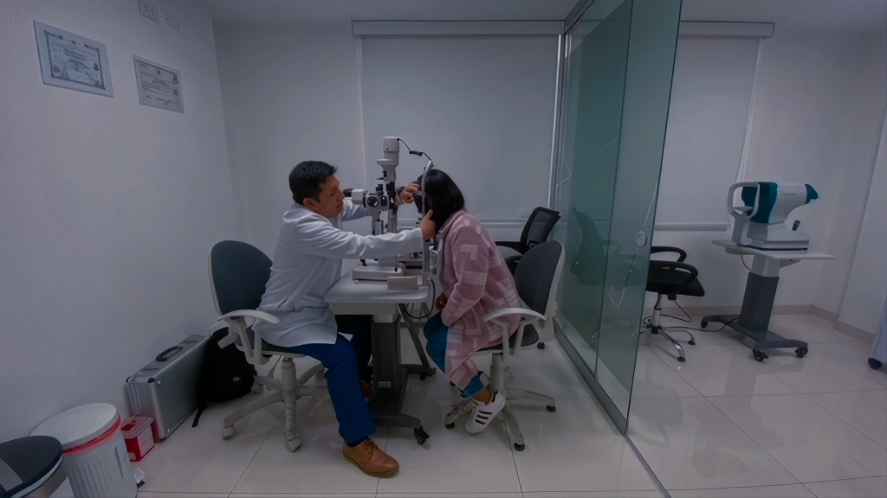
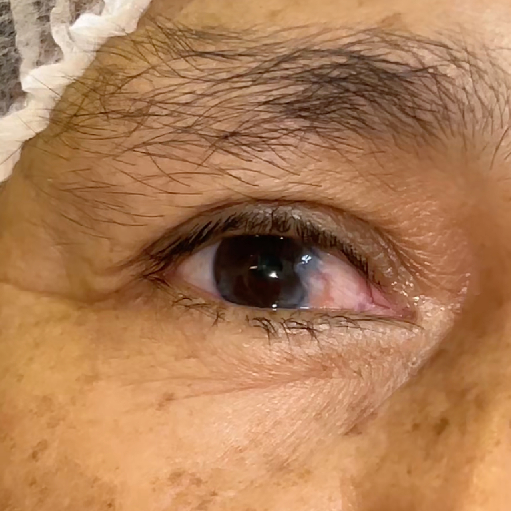
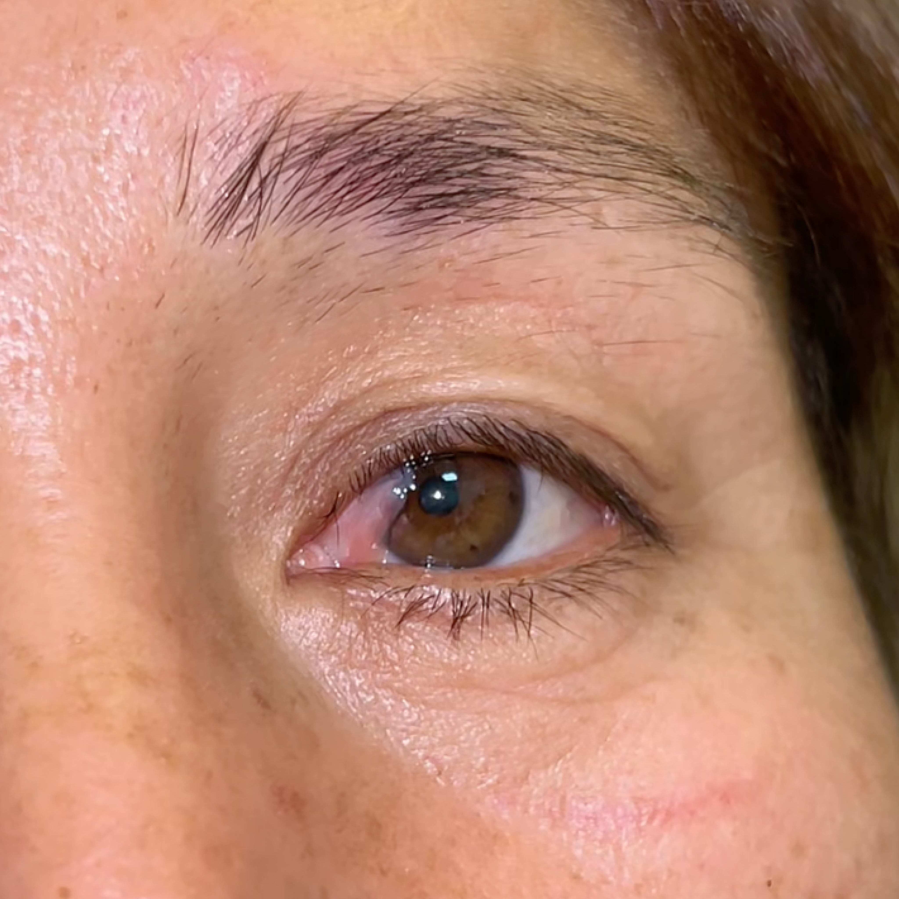

Cuidamos la salud de tu visión con especialistas en oftalmología
Diagnóstico, prevención y tratamiento para la salud visual de niños, adultos y adultos mayores.
Nuestros servicios a tu disposición
Escuchamos, comprendemos y ofrecemos un cuidado oftalmológico de clase mundial que ha devuelto la visión a miles de pacientes.
Cirugía de Cataratas
Se reemplaza el cristalino opaco del ojo por una lente artificial para restaurar la visión.
Cirugía de Pterigión
Se remueve la carnosidad ocular para aliviar molestias y mejorar la superficie del ojo.
Cirugía de Parpados
Elimina el exceso de piel en los párpados, mejorando el campo visual y la apariencia.

Atención Personalizada para Cada Paciente
Desde la consulta hasta la recuperación, escuchamos tus necesidades y diseñamos planes de tratamiento adaptados a tu estilo de vida y salud visual.
Agendar una citaAntes y después
Descubre los resultados reales de nuestros tratamientos en la vida de nuestros pacientes.

Cirugía de Pterigión
Removimos con éxito un pterigión avanzado, devolviendo al paciente una córnea sana y una visión más clara.

Cirugía de Pterigión
Removimos satisfactoriamente la carnosidad del paciente, devolviendo una visión nítida y comodidad ocular.